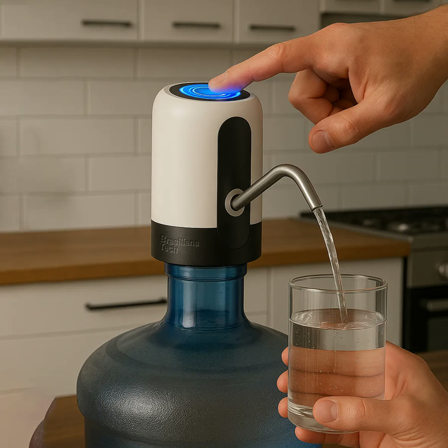
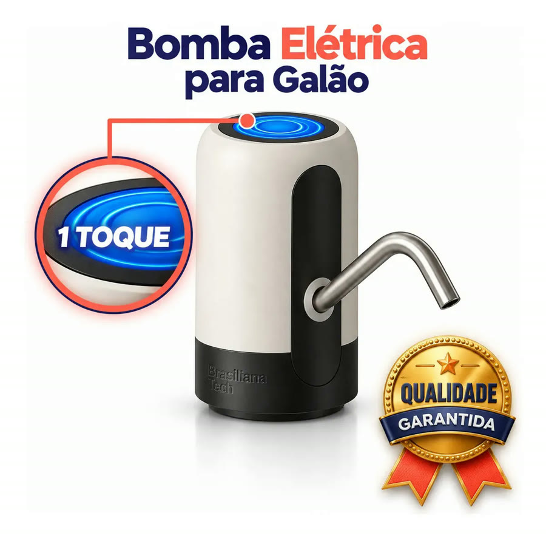
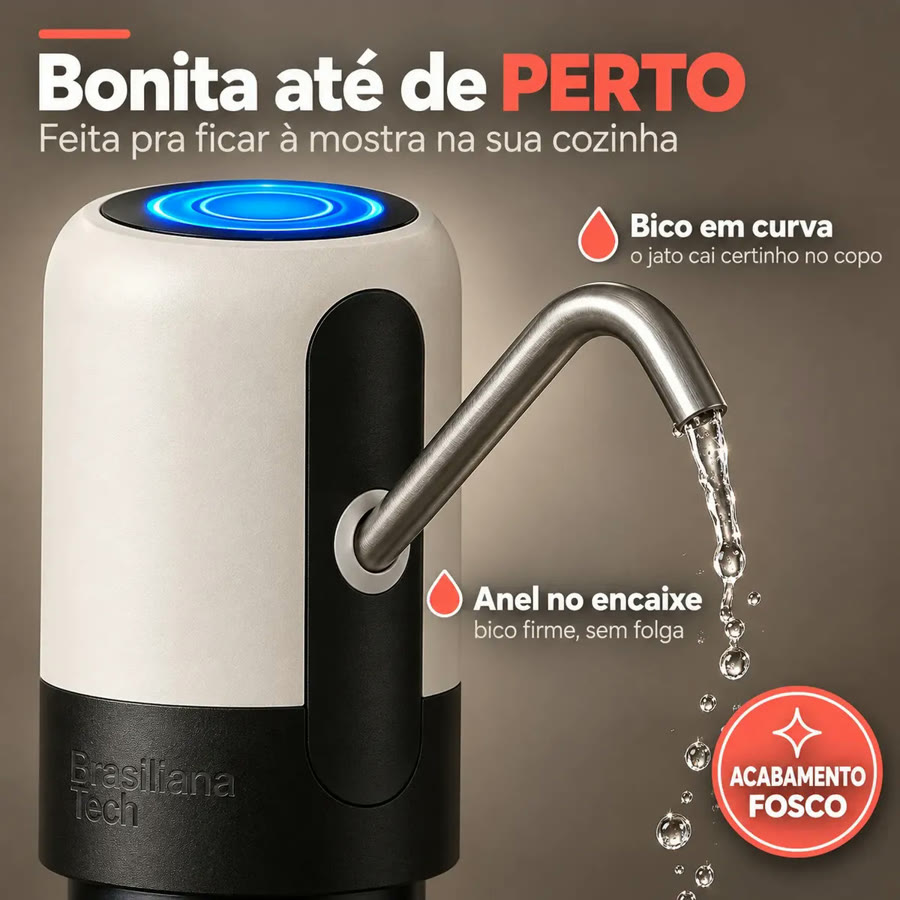
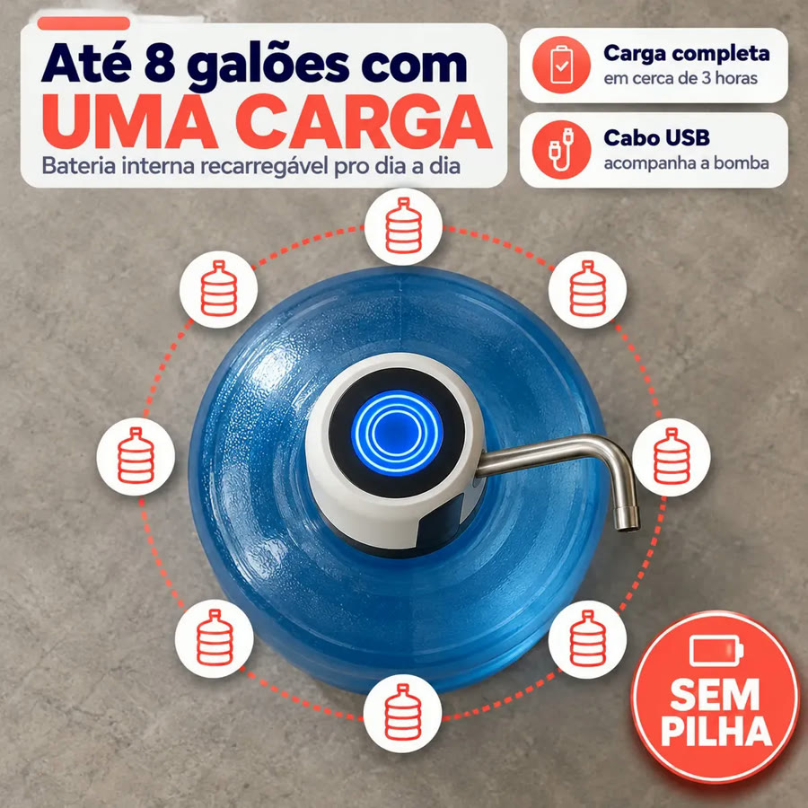
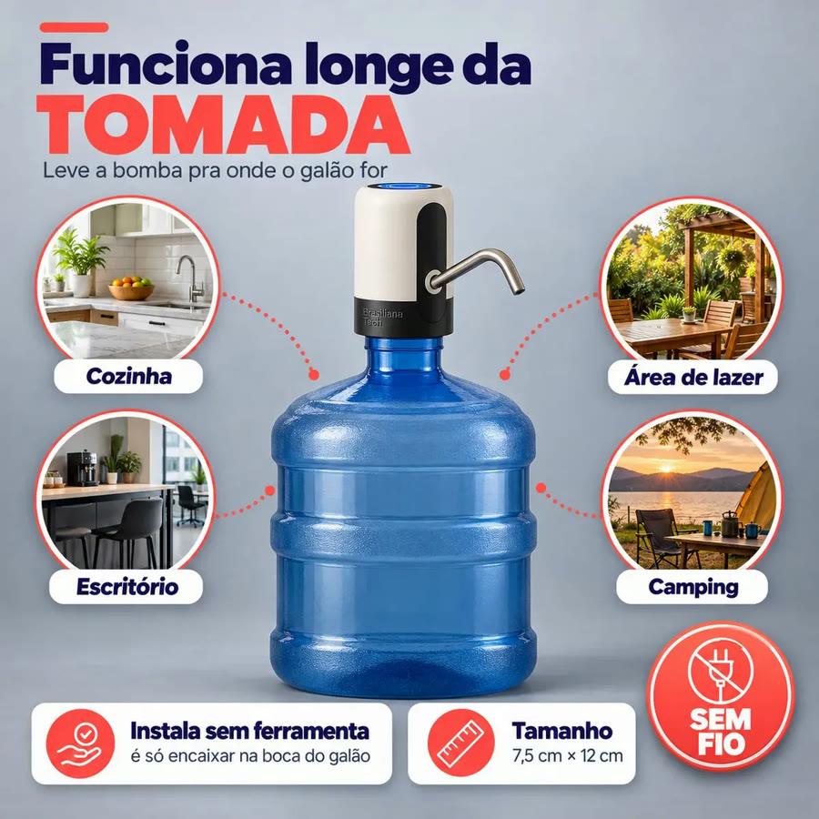
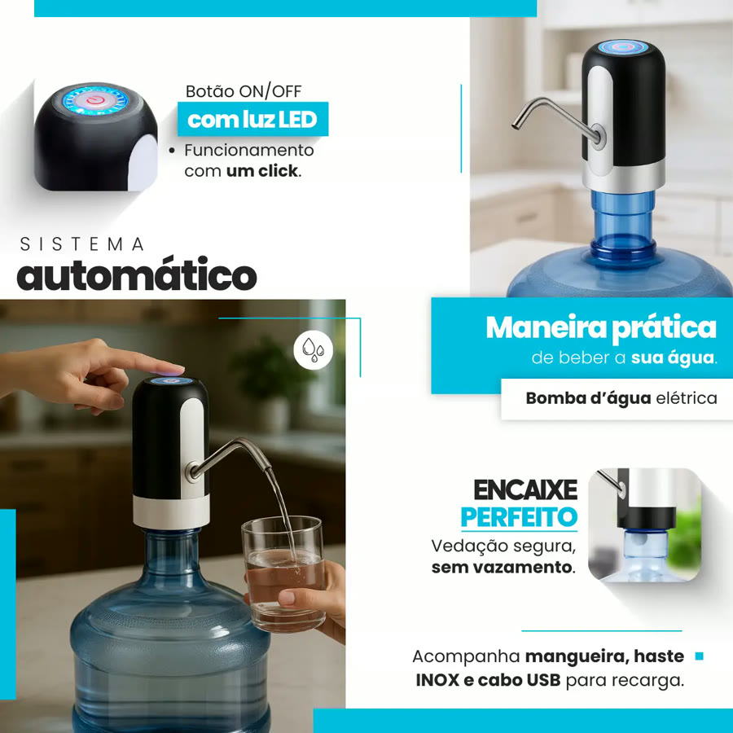

Achado nº 80
Virar garrafão de 20 litros no bebedouro?
Bomba elétrica recarregável para garrafão de água
★ 4,6 · mais de 8 mil avaliações no Mercado Livre






O que diz a página oficial do produto
- É uma bomba elétrica branca e preta que encaixa na boca do garrafão de água; aperta o botão de cima e a água sai pelo bico curvo de inox
- Segundo o anúncio, a bomba só puxa água enquanto está acionada
- Funciona com bateria interna recarregável por cabo USB, sem fio na tomada e sem pilha
- Segundo o anúncio, a carga completa leva cerca de 3 horas e uma carga dá para até 8 galões
- Segundo o anúncio, instala sem ferramenta: liga a mangueira na bomba e encaixa na boca do galão
- Acompanha a mangueira, a haste de inox e o cabo USB para recarga
- A capacidade recomendada é para garrafão de 20 litros
- O botão de cima tem luz LED
- O anúncio recomenda não mergulhar a bomba na água e carregar completamente antes do primeiro uso
- No Mercado Livre, tem nota 4,6 com mais de 8 mil avaliações e mais de 10 mil vendidos
Link de afiliado: se você comprar por ele, a Achadaria pode receber uma comissão, sem custo extra para você. Preço, estoque e entrega são da loja e podem mudar; confira lá antes de comprar.